Tutorial Para Iniciantes do Piximi (Portugues)#
Segmentação e classificação sem instalação no navegador
Beth Cimini, Le Liu, Esteban Miglietta, Paula Llanos, Nodar Gogoberidze
Instituto Broad do MIT e Harvard, Cambridge, MA.
Informações básicas:#
O que é Piximi?#
Piximi é uma ferramenta moderna de análise de imagens sem programação que utiliza aprendizado profundo. Implementado como um aplicativo web em https://piximi.app/, o Piximi não requer instalação e pode ser acessado por qualquer navegador moderno. Sua arquitetura exclusiva para clientes preserva a segurança dos dados do pesquisador, executando toda a computação localmente.
O Piximi é interoperável com ferramentas e fluxos de trabalho existentes, suportando importação e exportação de dados e formatos de modelos comuns. A interface intuitiva e o fácil acesso ao Piximi permitem que pesquisadores obtenham insights sobre imagens em apenas alguns minutos. O Piximi visa levar a análise de imagens com aprendizado profundo a uma comunidade mais ampla, eliminando barreiras.
Funcionalidades principais: Anotador, Segmentador, Classificador, Medições.
Objetivo do exercício#
Neste exercício, você se familiarizará com as principais funcionalidades do Piximi: anotação, segmentação, classificação, mensuração e visualização, e o utilizará para analisar um conjunto de imagens de um experimento de translocação. O objetivo deste experimento é determinar a menor dose efetiva de Wortmannin necessária para induzir a localização nuclear de FOXO1A marcada com GFP (Figura 1). Você segmentará as imagens usando um dos modelos de aprendizado profundo disponíveis no Piximi, verificará e selecionará a segmentação e, em seguida, treinará um classificador de imagens para classificar as células individuais como tendo “GFP nuclear”, “GFP citoplasmática” ou “sem GFP”. Por fim, você fará medições e as plotará para responder à pergunta biológica.
Contexto do experimento#
Neste experimento, pesquisadores obtiveram imagens de células U2OS de osteossarcoma (câncer ósseo) fixadas expressando uma proteína de fusão FOXO1A-GFP e coraram DAPI para marcar os núcleos. FOXO1 é um fator de transcrição que desempenha um papel fundamental na regulação da gliconeogênese e glicogenólise por meio da sinalização da insulina. FOXO1A transita dinamicamente entre o citoplasma e o núcleo em resposta a vários estímulos. A wortmanina, um inibidor da PI3K, pode bloquear a exportação nuclear, resultando no acúmulo de FOXO1A no núcleo.

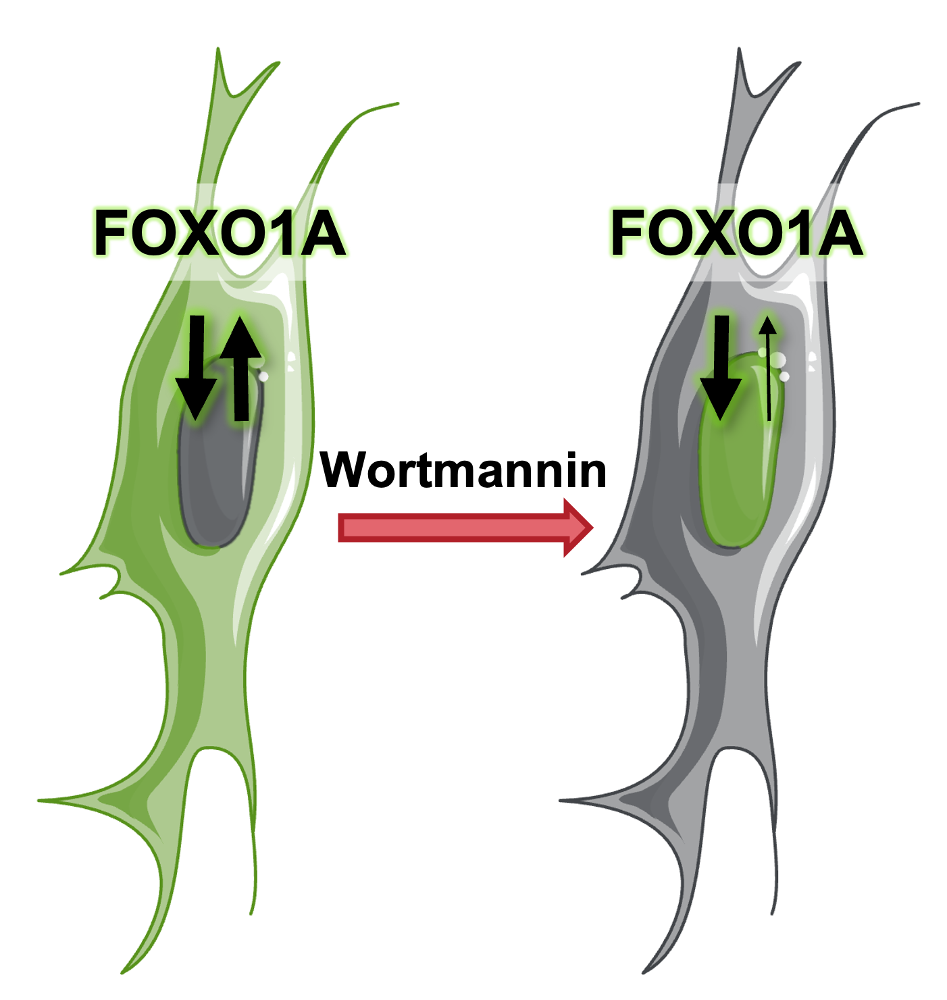
Schematic representation of FOXO1A mechanism
Materiais necessários para este exercício#
Nenhum download é necessário: as imagens estão incluídas no Piximi como um projeto de exemplo chamado Translocation Tutorial. Ele contém todas as imagens, já rotuladas com o tratamento correspondente (concentração de Wortmannin ou Controle).
Instruções do exercício#
Leia os passos abaixo e siga as instruções onde indicado. Os passos em que você precisa encontrar uma solução estão marcados com 🔴 PARA FAZER.
1. Carregue o projeto Piximi#
🔴 PARA FAZER
Inicie o Piximi acessando: https://piximi.app/
Carregue o projeto de exemplo: Na tela inicial, clique em “Open Example Project” e selecione “Translocation Tutorial”. Se você já tem um projeto aberto, pode acessar a mesma lista por “Open” > “Project” > “Load Example”. Você também pode alterar o nome do projeto no painel superior esquerdo, como “Exercício Piximi”. Conforme ele é carregado, você pode ver a progressão no logotipo no canto superior esquerdo.

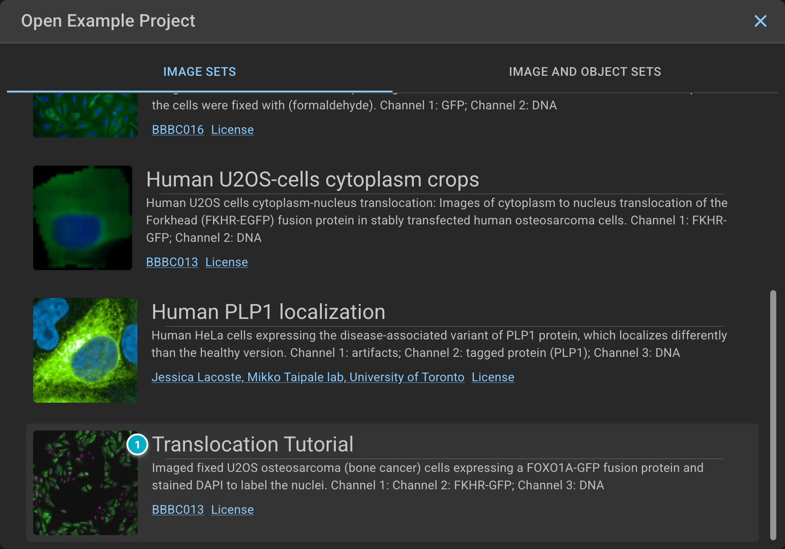
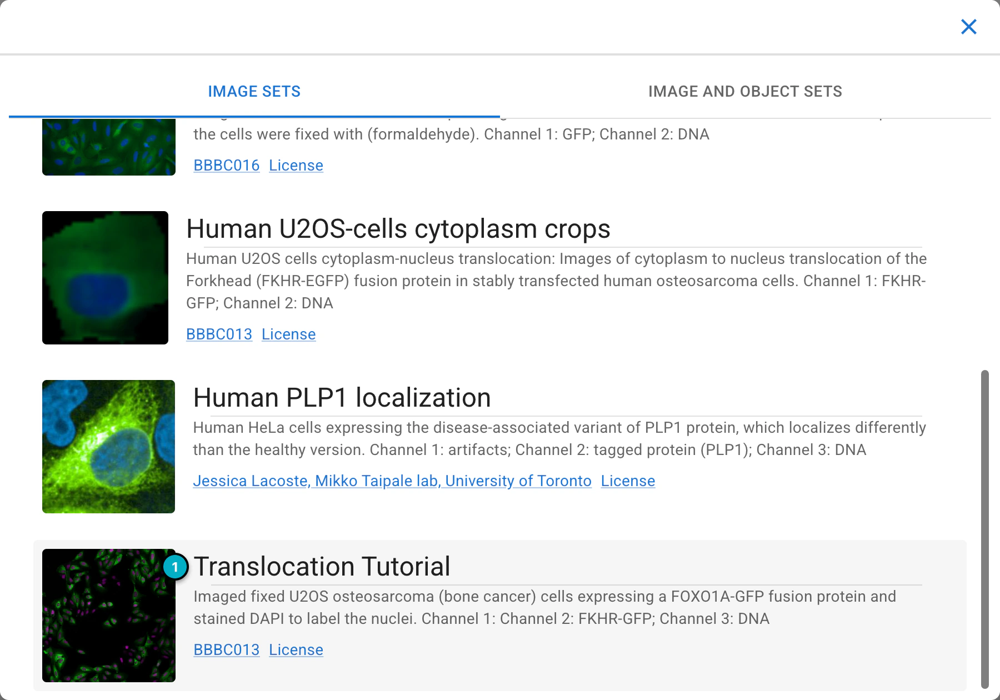
Carregando o projeto de exemplo Translocation Tutorial.
2. Verifique as imagens carregadas e explore a interface do Piximi#
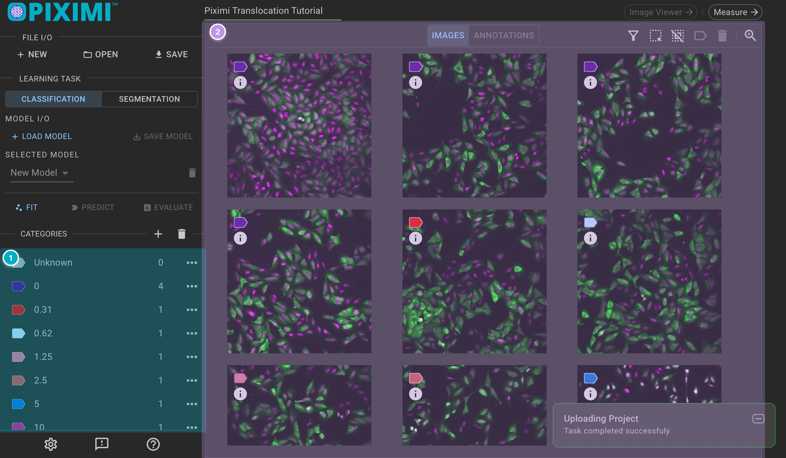
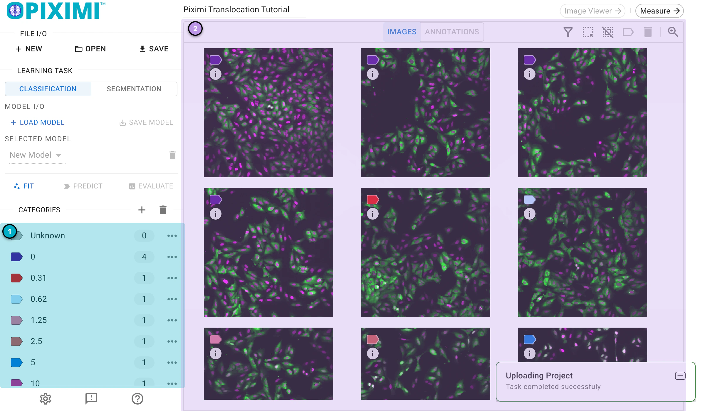
Explorando as imagens e rótulos.
Estas 17 imagens representam tratamentos com Wortmannin em dez concentrações diferentes (expressas em nM), bem como tratamentos controles (0 nM). Observe que o canal DAPI (Núcleos) é mostrado em magenta e que o canal GFP (FOXOA1) é mostrado em verde.
Os rótulos coloridos no canto superior esquerdo de cada imagem, e a lista “Categories” à esquerda, vêm de metadados salvos com o projeto de exemplo. Neste tutorial, os diferentes rótulos coloridos indicam a concentração de Wortmannin, enquanto os números na lista representam o número de imagens em cada categoria.
Opcionalmente, você pode rotular as imagens manualmente clicando no ícone “+” (New Category) ao lado de “Categories” e inserindo um nome; depois, selecione imagens na grade e clique no ícone “Categorize” acima delas para atribuir uma categoria. Neste tutorial, pularemos esta etapa, pois os rótulos já fazem parte do projeto. Mais informações podem ser encontradas na seção Project Viewer dos documentos.
3. Segmentar Células - descubra as células a partir do fundo#
🔴 PARA FAZER
Para iniciar a previsão em todas as imagens, clique no ícone “Select all” acima das imagens.
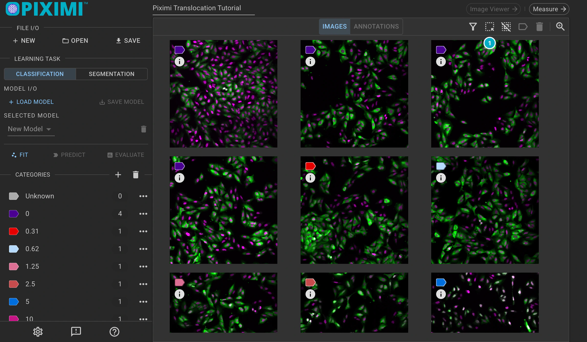
Selecionando todas as imagens.
Na seção “Learning Task”, altere a tarefa para “Segmentation”.
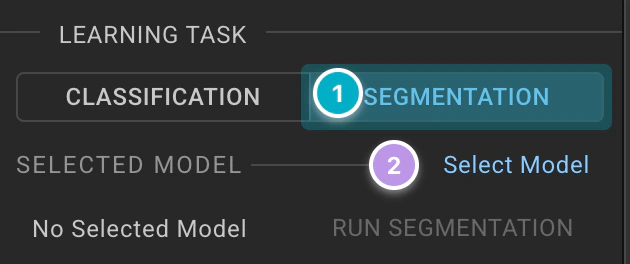
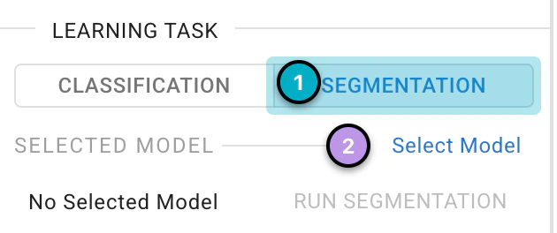
Alterando a tarefa para “Segmentation”.
Clique em “Select Model” e a janela “Load Segmentation Model” será exibida, permitindo que você escolha um modelo pré-treinado.
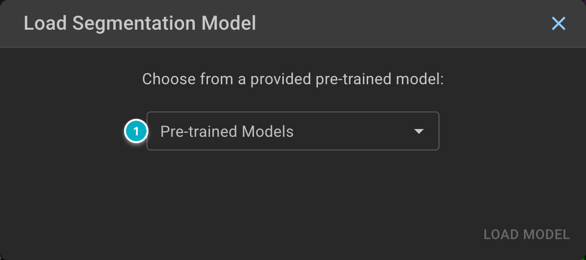
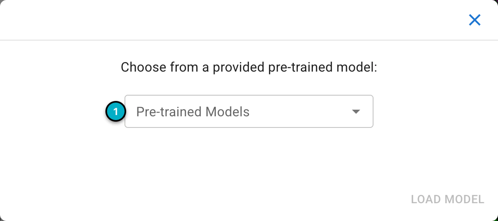
A janela “Load Segmentation Model”.
Para o exercício de hoje, selecione “Cellpose-SAM” na lista “Pre-trained Models”. Mais informações sobre os modelos suportados podem ser encontradas aqui. Clique em “Load Model” para carregar seu modelo e selecioná-lo. O modelo é executado no seu navegador, então o primeiro carregamento baixa os arquivos do modelo (o Cellpose-SAM tem cerca de 588 MB e requer um navegador compatível com WebGPU).
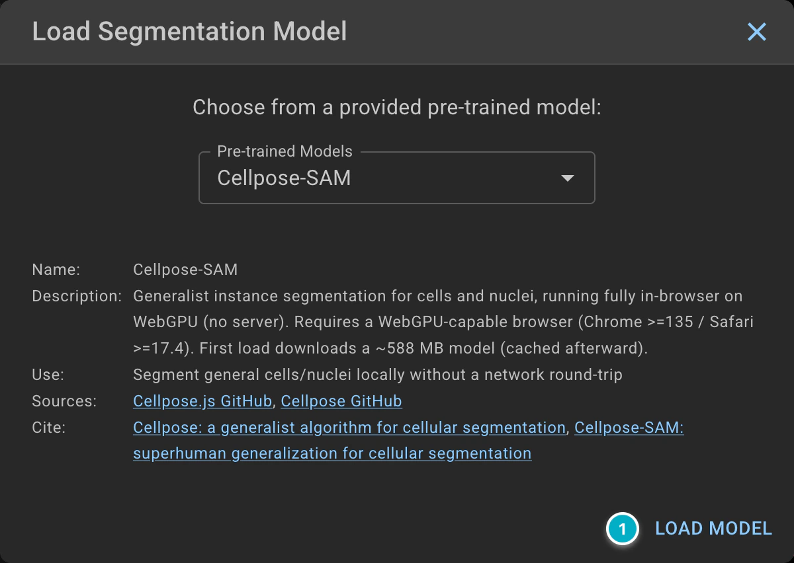
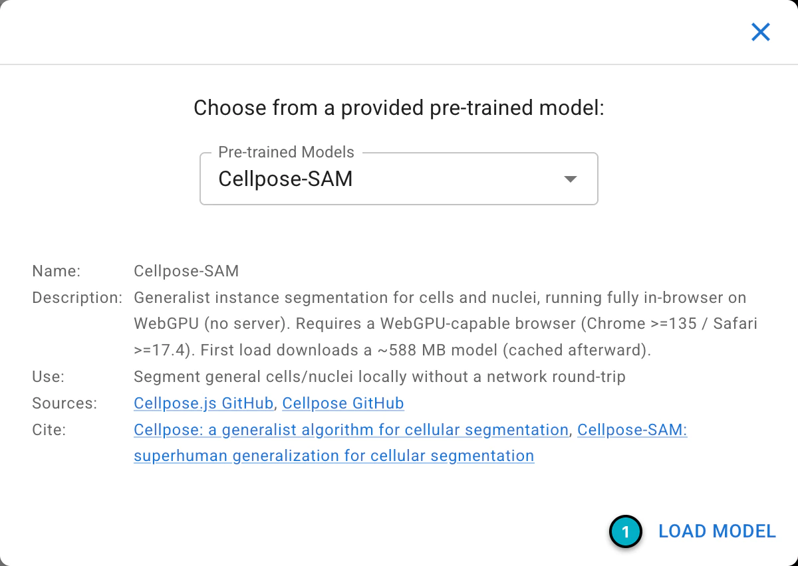
Escolhendo “Cellpose-SAM” na lista “Pre-trained Models”.
Por fim, clique em “Run Segmentation”. Os objetos segmentados serão adicionados ao projeto como um novo tipo (kind), com o nome definido em “Output kind name” (“cellpose_cells” por padrão). O Piximi mostra o progresso da segmentação enquanto ela é executada.
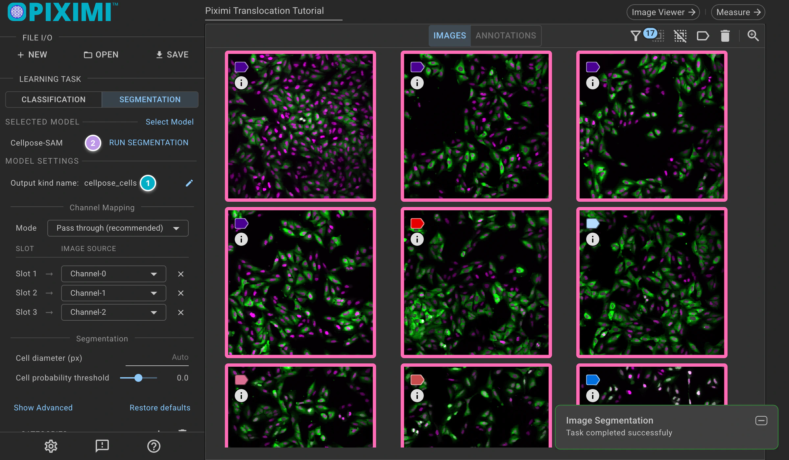
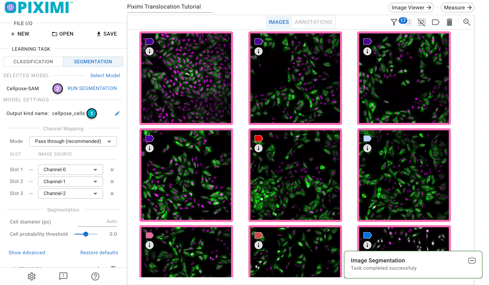
Executando a segmentação.
Observe que as etapas anteriores foram executadas em sua máquina local, o que significa que suas imagens estão armazenadas localmente. A inferência do Cellpose-SAM também é executada localmente em seu navegador, portanto suas imagens nunca são enviadas.
4. Visualize o resultado da segmentação e corrija os erros de segmentação#
🔴 PARA FAZER
Clique em “Annotations” acima da grade de imagens e depois na aba cellpose_cells para verificar as células individuais que foram segmentadas.
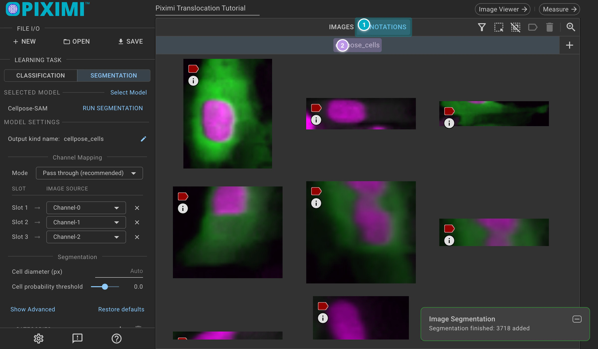
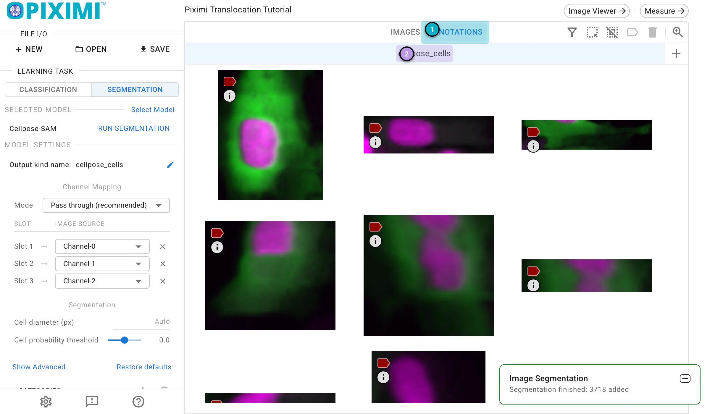
Visualizando o tipo “cellpose_cells”.
Selecione alguns objetos identificados ou imagens inteiras e clique em “Image Viewer” na barra superior para visualizá-los no ImageViewer.
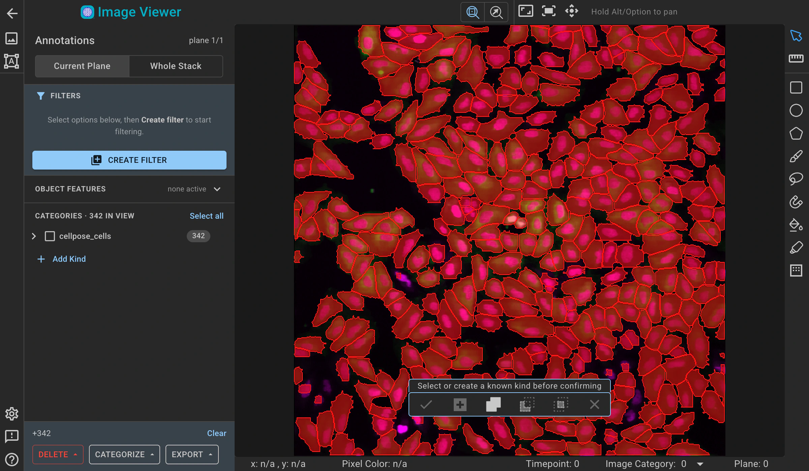
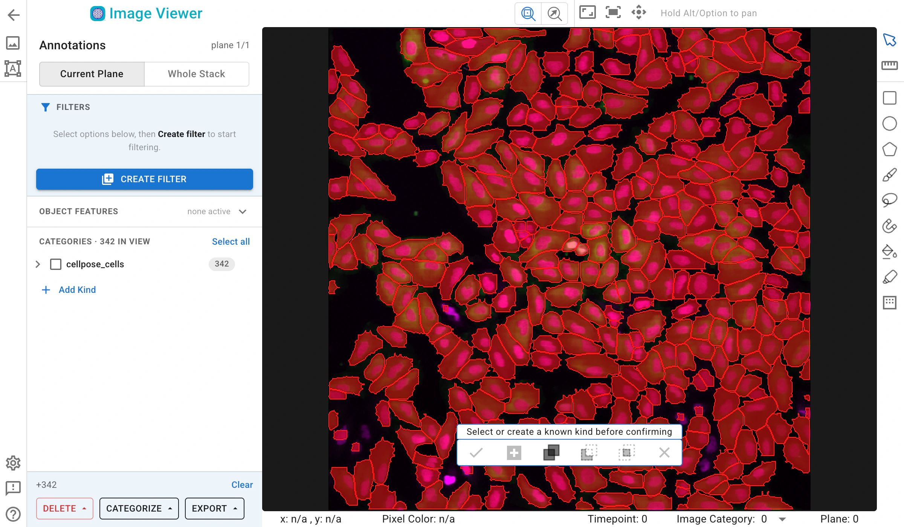
Visualizando as células segmentadas no Visualizador de Imagens.
Opcionalmente, aqui você pode refinar manualmente a segmentação usando as ferramentas do anotador. O anotador Piximi oferece diversas opções para adicionar, subtrair ou interseccionar anotações. Além disso, a ferramenta de seleção permite redimensionar ou excluir anotações específicas. Para começar a editar, selecione imagens específicas ou todas clicando na caixa de seleção na parte superior.
Opcionalmente, você pode ajustar os canais: embora existam dois canais neste experimento, o sinal dos núcleos é duplicado nos canais vermelho e verde. Este projeto foi projetado para ser compatível com daltonismo e produzir uma cor magenta para os núcleos. O canal verde também inclui sinais citoplasmáticos.
Outro motivo para duplicar os canais é que alguns modelos — como o modelo Cellpose que usamos hoje — exigem uma entrada de três canais.
Você pode optar por segmentar manualmente as células para gerar máscaras para dados de verdade básica.
Classificar células#
Motivo para isso: Queremos classificar as ‘cellpose_cells’ com base na distribuição de GFP (em núcleos, citoplasma ou sem GFP) sem rotular todas elas manualmente. Para isso, podemos usar a função de classificação do Piximi, que nos permite treinar um classificador usando um pequeno subconjunto de dados rotulados e, em seguida, classificar automaticamente as células restantes.
🔴 PARA FAZER
Acesse a aba cellpose_cells (na visualização “Annotations”) que exibe os objetos segmentados e clique no botão “Classification” na seção “Learning Task” do painel esquerdo. As categorias listadas à esquerda agora pertencem às células, e não às imagens.
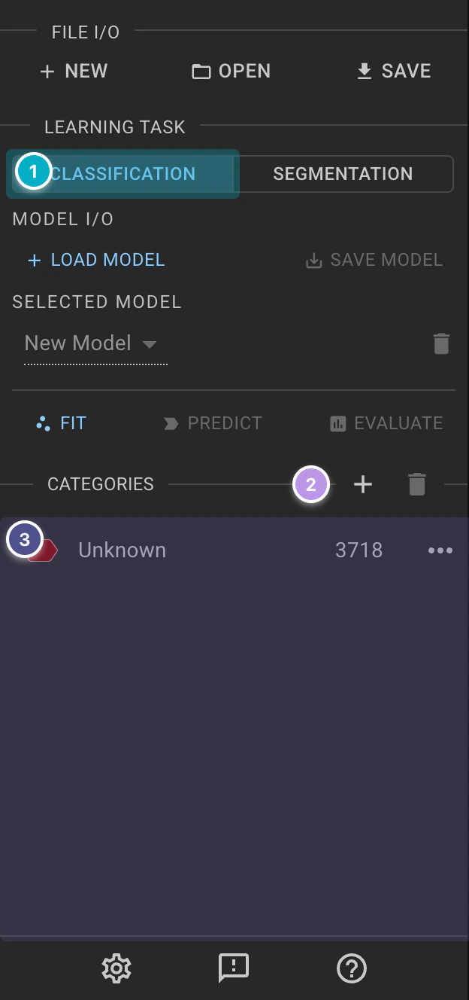
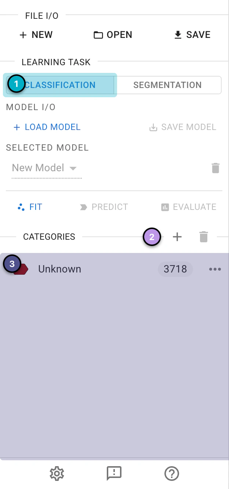
A seção de classificação do painel esquerdo.
Crie novas categorias clicando no ícone “+” (New Category) ao lado de “Categories”, inserindo um nome na janela “Create Category” e clicando em “Confirm”. Adicione as três categorias “Cytoplasmic_GFP”, “Nuclear_GFP” e “No_GFP”.
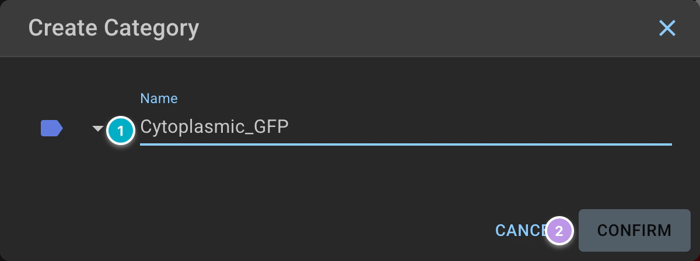
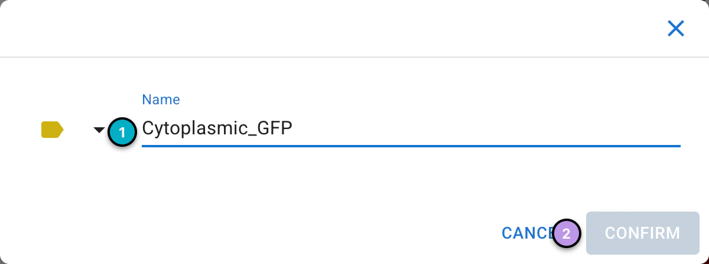
Criando uma categoria.
Clique nas células que correspondem aos seus critérios; cada clique adiciona uma célula à seleção (use o ícone “Deselect” para recomeçar). Tente atribuir ~20–40 células por categoria. Após selecionar, clique no ícone “Categorize” acima das células e escolha a categoria a atribuir às células selecionadas.
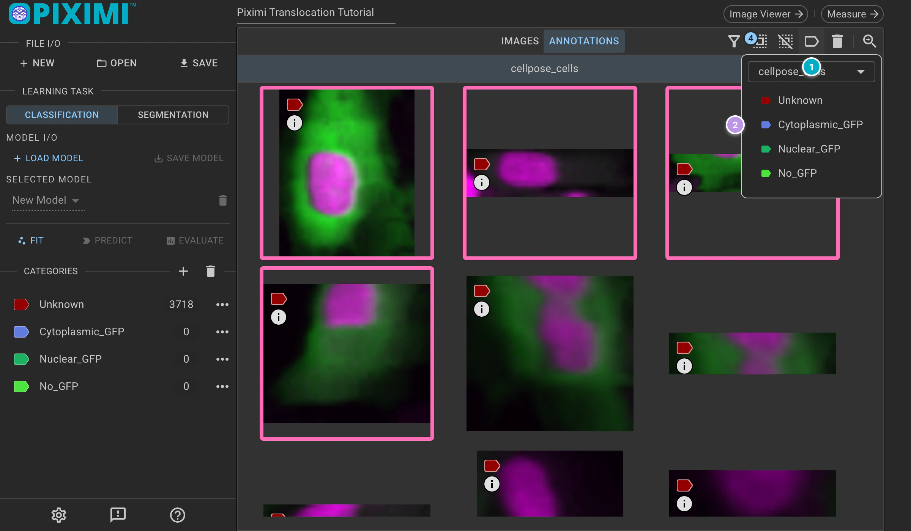
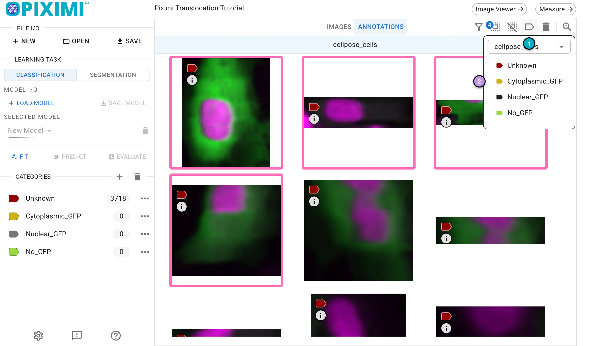
Classificação de células individuais com base na presença e localização de GFP.
6. Treine o modelo do Classificador#
🔴 PARA FAZER
Clique em “Fit” na seção “Learning Task” para abrir a janela “Fit Model” com as configurações do modelo (aba “Hyperparameters”). Para o exercício de hoje, ajustaremos alguns parâmetros:
Verifique se a “Model Architecture” está definida como Simple CNN (o padrão).
Em “Data Preprocessing Settings” > “Image Augmentation”, atualize o “Input Shape” para:
Row: 48
Col: 48
Ch.: 3 (já que nossas imagens estão no formato RGB)
(Você pode mudar para outros números, como 64, 128)
Em “Data Partitioning”, defina o “Training Percentage” (Porcentagem de Treinamento) como 0,75, o que reserva 25% dos dados rotulados para validação.
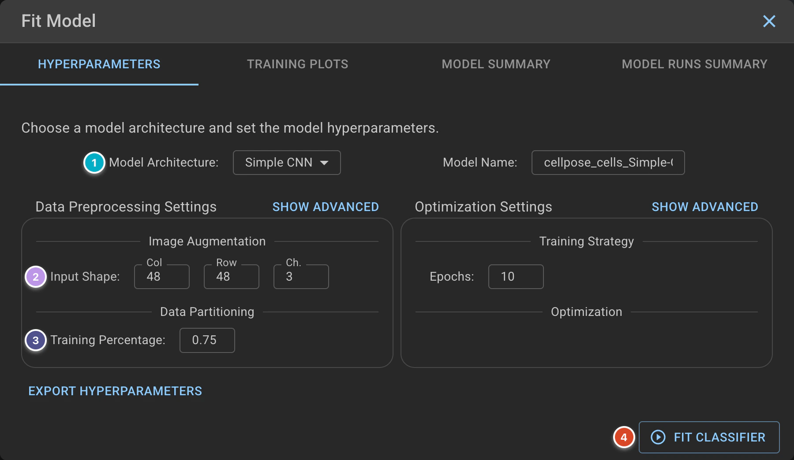
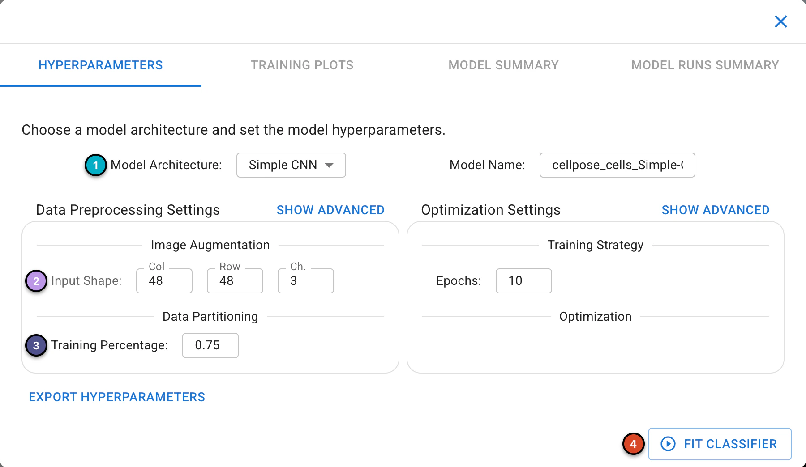
Configuração do modelo classificador.
Ao clicar em “Fit Classifier” no Piximi, a janela muda para a aba “Training Plots”, onde aparecem dois gráficos de treinamento: “Precisão por época” e “Perda por época”. Cada gráfico mostra curvas para os dados de treinamento e validação.
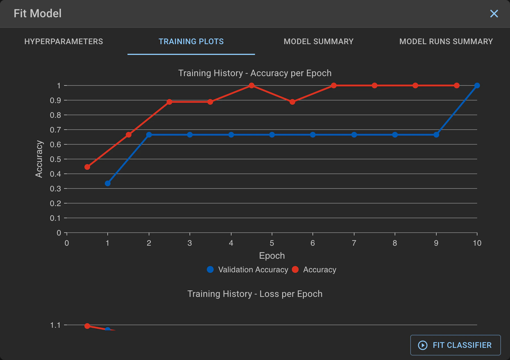
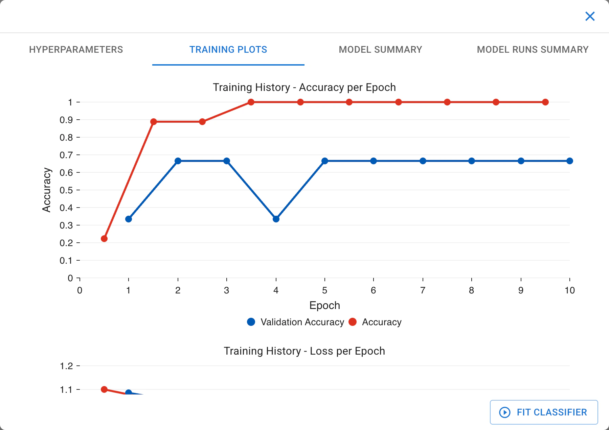
Gráficos do histórico de treinamento.
No gráfico de precisão, você verá o quão bem o modelo está aprendendo. Idealmente, a precisão tanto do treinamento quanto da validação deve aumentar e permanecer próxima.
No gráfico de perdas, valores menores significam melhor desempenho. Se a perda de validação começar a aumentar enquanto a perda de treinamento continua caindo, o modelo pode estar com sobreajuste.
Esses gráficos ajudam a entender como o modelo está aprendendo e se ajustes são necessários. Feche a janela “Fit Model” com o ícone  no canto superior direito quando terminar.
no canto superior direito quando terminar.
7. Avaliar modelo:#
🔴 A FAZER
Clique em “Evaluate” para avaliar o modelo que acabamos de treinar. A matriz de confusão e as métricas de avaliação comparam as previsões do modelo nas células de validação com seus rótulos de verdade básica.
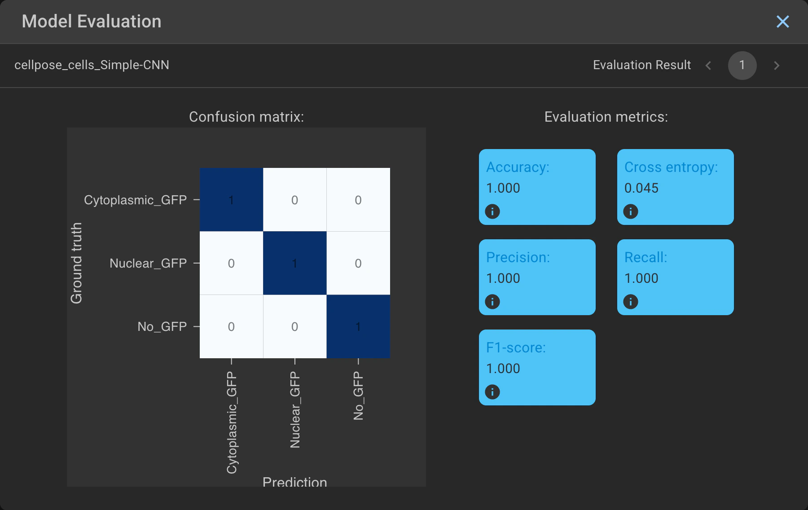
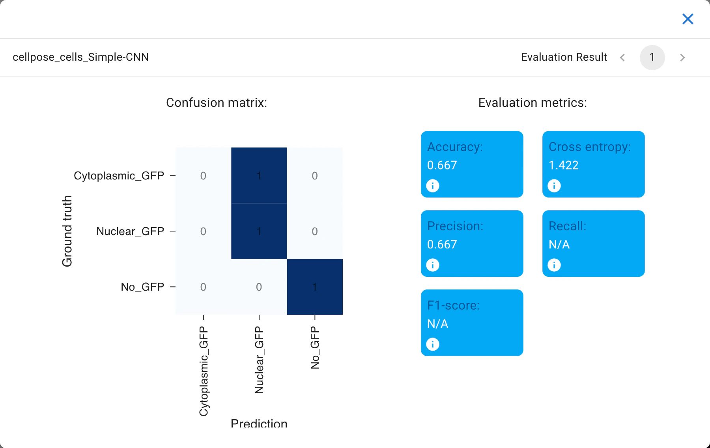
Avaliação da execução de treinamento.
Clique em “Predict” para aplicar o modelo que acabamos de treinar. Esta etapa gerará previsões nas células que não categorizamos.
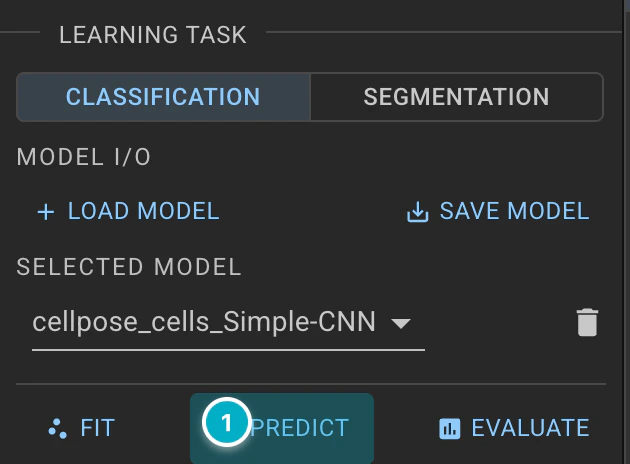
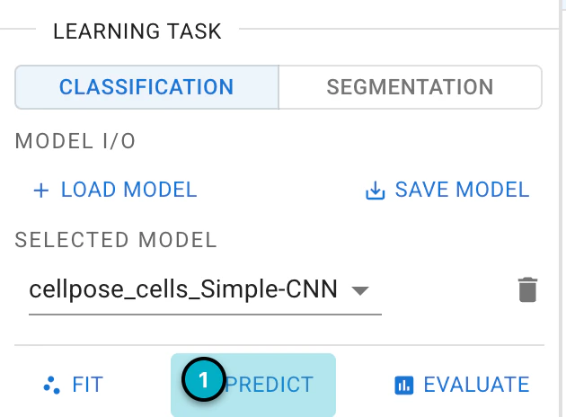
Prever classificador.
Você pode revisar as previsões na guia cellpose_cells. As categorias previstas são apenas exibidas, não aplicadas, até que você as aceite, e “Clear Predictions” as descarta.
Opcionalmente, você pode continuar categorizando células para refinar a verdade básica e aprimorar o classificador, e depois treinar e prever novamente. Esse processo faz parte da classificação humana no ciclo, na qual você corrige e treina o modelo iterativamente com base na entrada humana.
Clique e mantenha pressionado “Accept Predictions (Hold)” para atribuir os rótulos previstos a todos os objetos.
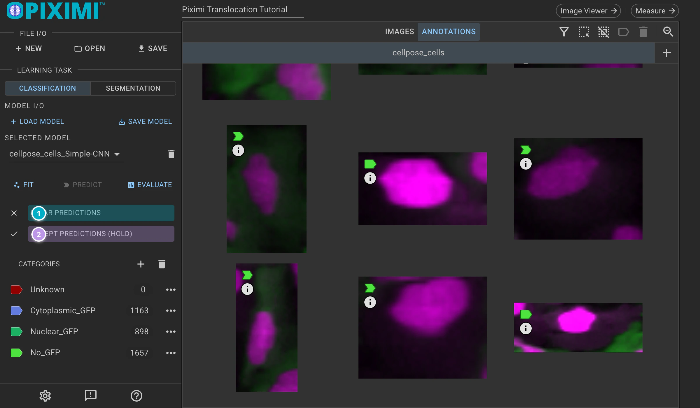
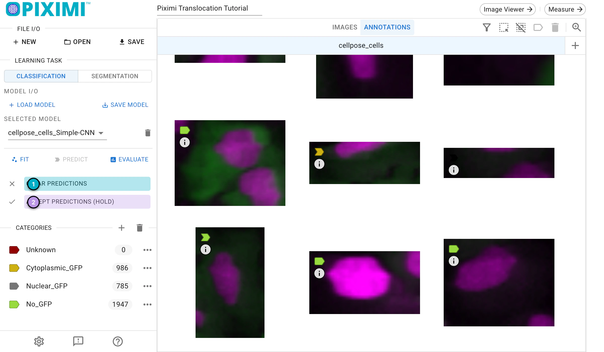
Aceitar previsões.
8. Medição#
Assim que estiver satisfeito com a classificação, prosseguiremos com a medição dos objetos. O objetivo do exercício de hoje é determinar a concentração mínima de Wortmannin necessária para bloquear a exportação de FOXO1A-GFP dos núcleos. Para isso, podemos medir a intensidade total de GFP na imagem ou no objeto. Aqui medimos as imagens, que têm a concentração de Wortmannin como categoria.
🔴 PARA FAZER
Clique em “Measure” na barra superior do Project Viewer.
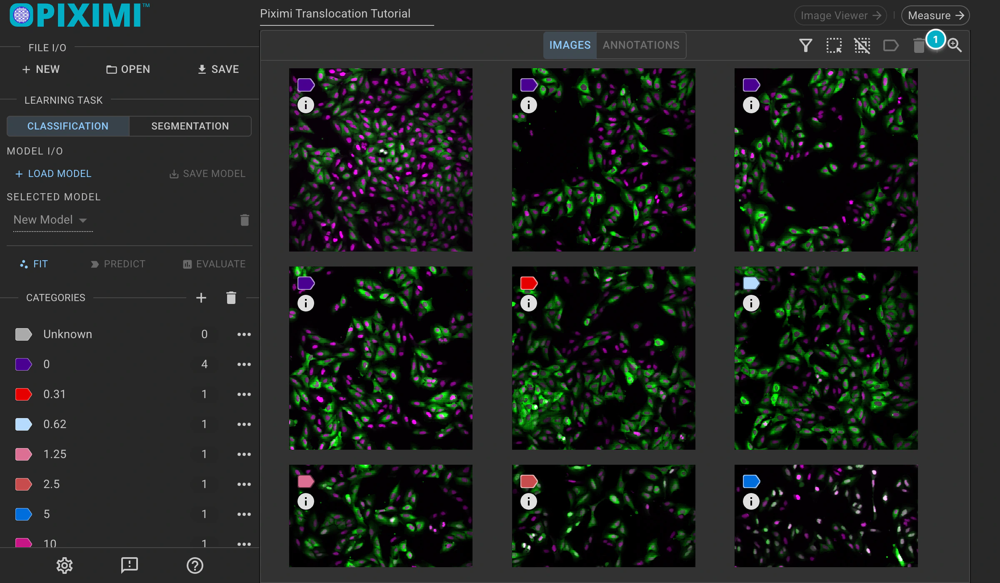
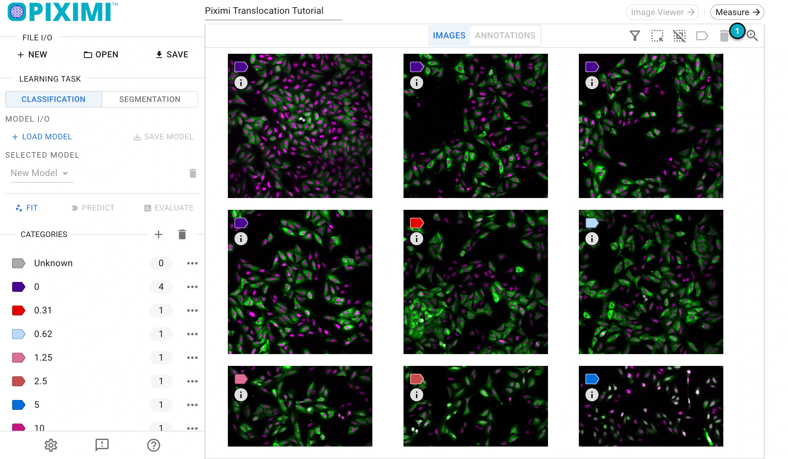
Navegar para Medidas.
Clique em “Add Table”, mantenha “Images” como tipo (kind) e clique em “Confirm”. Observação: a preparação dos dados para a etapa de medição pode levar algum tempo para ser processada.
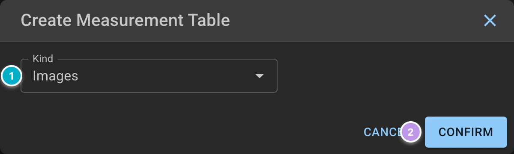
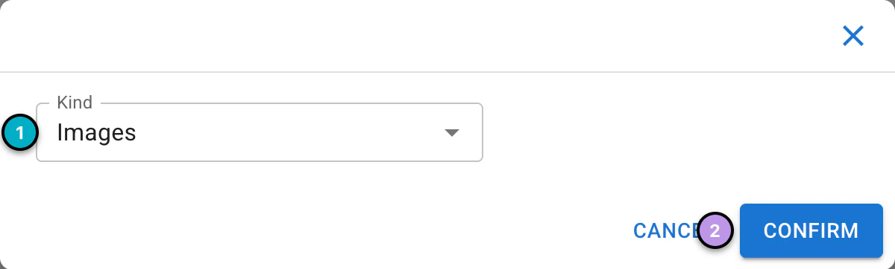
Criar tabela de medidas “Images”.
No painel esquerdo, expanda “Intensity” > “Total” e marque “Channel-1” para selecionar a medição para GFP. Você verá a medição na grade de dados.
Em “Split Options”, arraste “Category” de “Available Dimensions” para “Column Grouping” para mostrar as medições de cada categoria (aqui, cada concentração de Wortmannin). A grade mostra “Count”, “Mean”, “Median” e “Std Dev” de cada medição, e o conjunto de dados completo está disponível ao exportar o arquivo .csv.
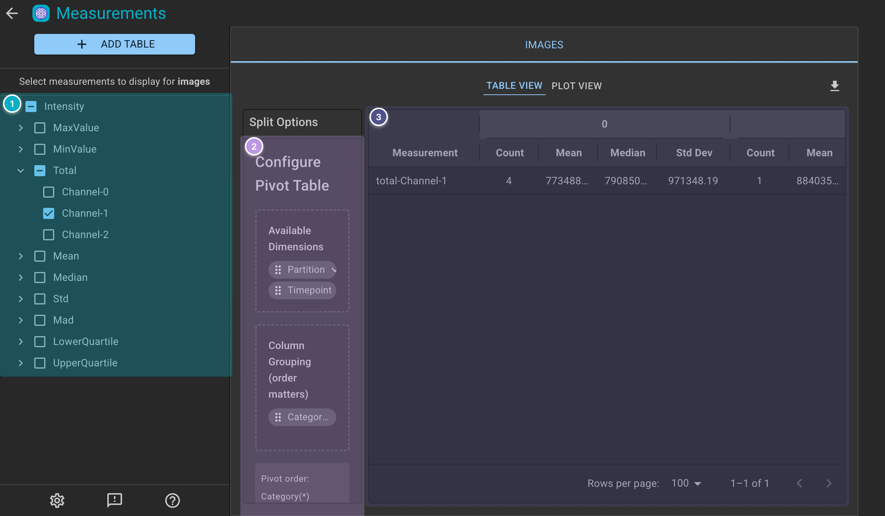
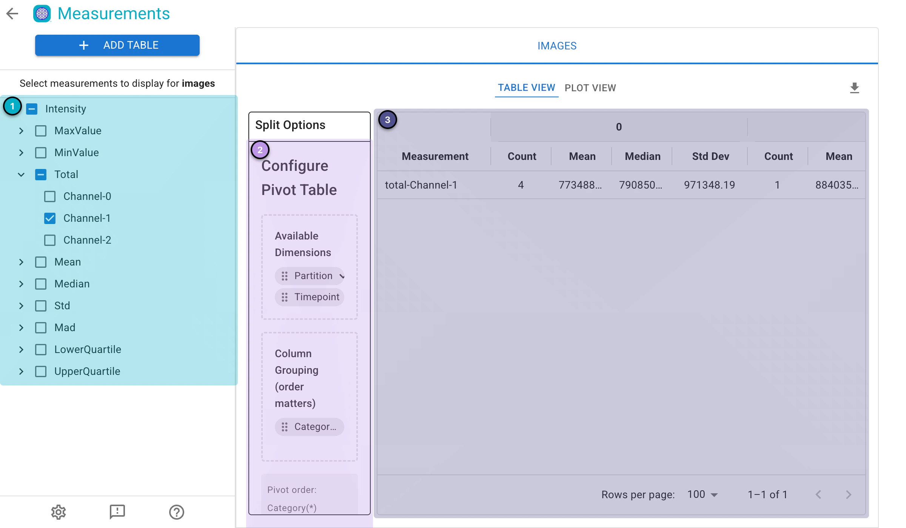
Medidas calculadas.
9. Visualização#
Após gerar as medições, você pode plotá-las.
🔴 PARA FAZER
Clique em “Plot View” acima da tabela para visualizar as medições.
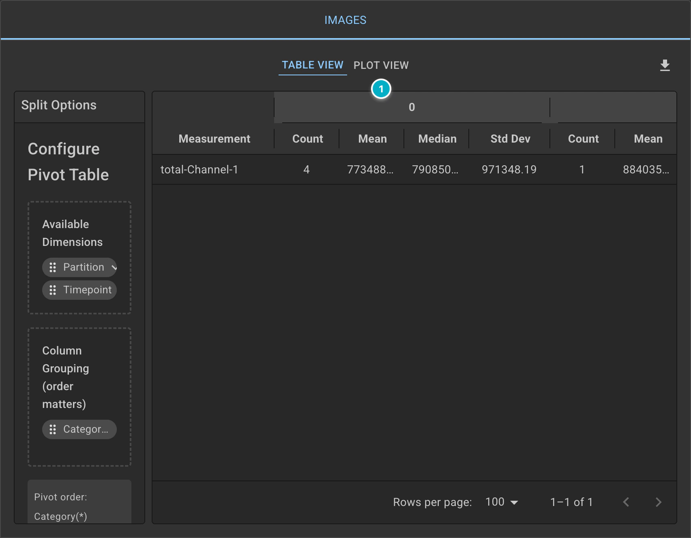
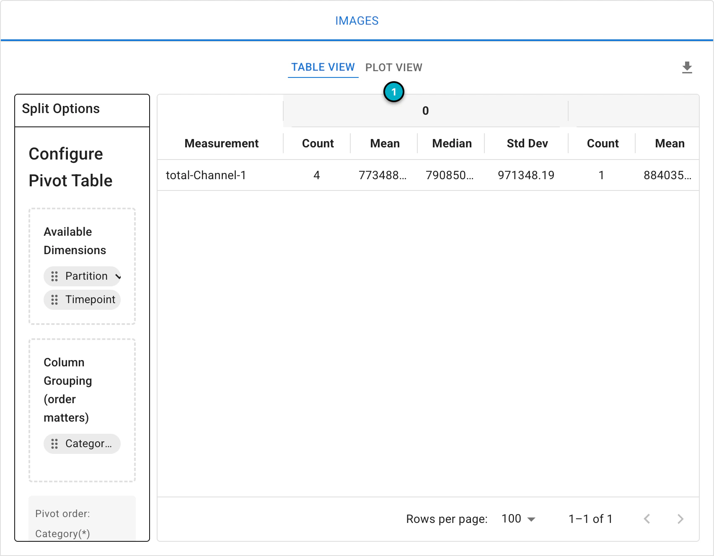
Gráficos de medição.
Defina “Plot” como “Swarm” e escolha um “Color Theme” de acordo com sua preferência.
Selecione “Y-axis” como “total-Channel-1” e defina “SwarmGroup” como “category”; isso mostrará como a intensidade da GFP varia entre as diferentes categorias.
Selecionar “Show Statistics” sobrepõe diagramas de caixa (box plots) aos enxames (swarms), exibindo a mediana, os quartis superior e inferior, e o mínimo e o máximo de cada categoria.
Opcionalmente, você pode experimentar diferentes tipos de gráfico e eixos para ver se os dados revelam insights adicionais.
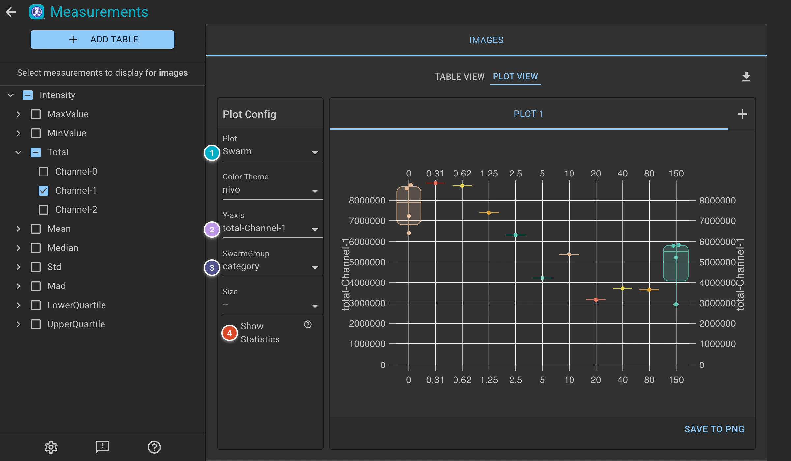
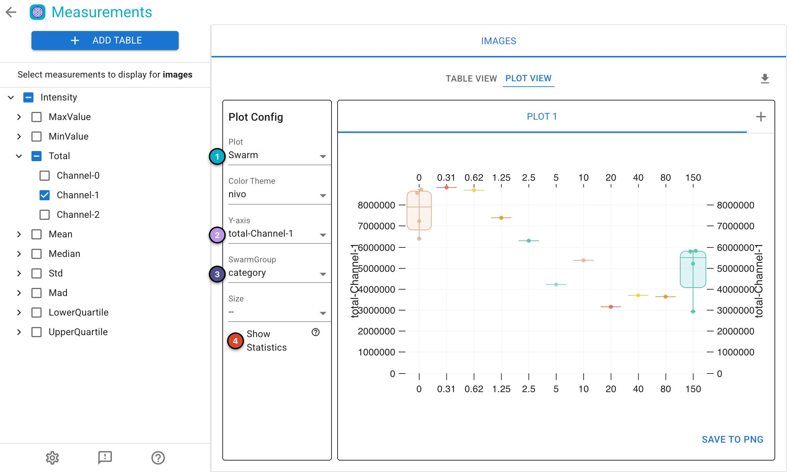
Gráfico de enxame (swarm) da intensidade total de GFP por categoria.
10. Exportar resultados e salvar o projeto#
🔴 PARA FAZER

11. Informações de apoio#
Confira o artigo do Piximi: https://www.biorxiv.org/content/10.1101/2024.06.03.597232v2
Confira a documentação do Piximi:Documentação do Piximi:https://documentation.piximi.app/intro.html
Relatar bugs/erros ou solicitar recursos piximi/documentation#issues